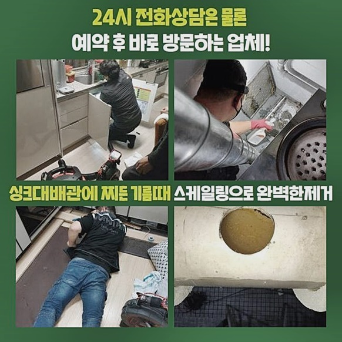
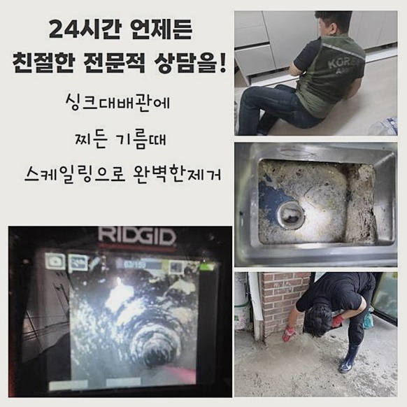
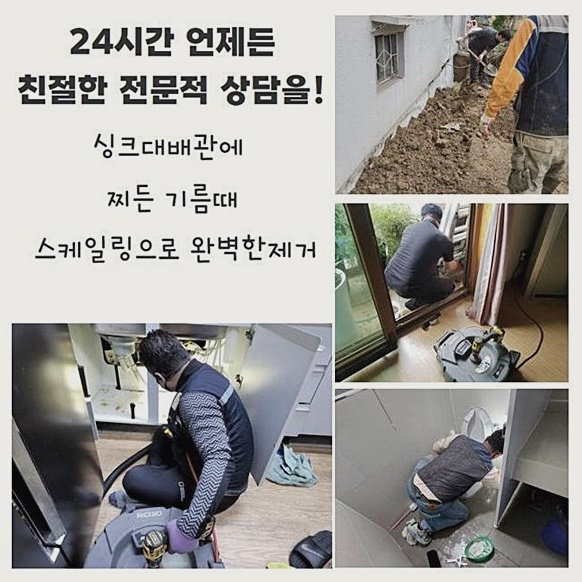
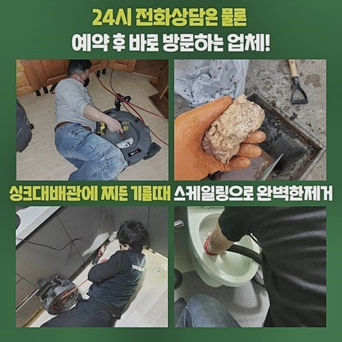
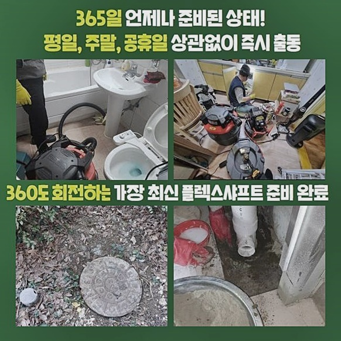
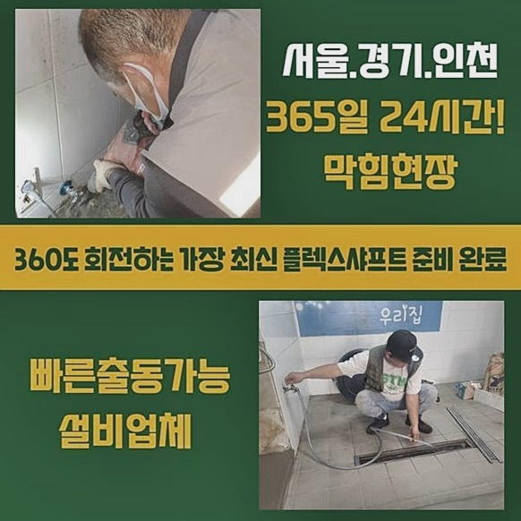
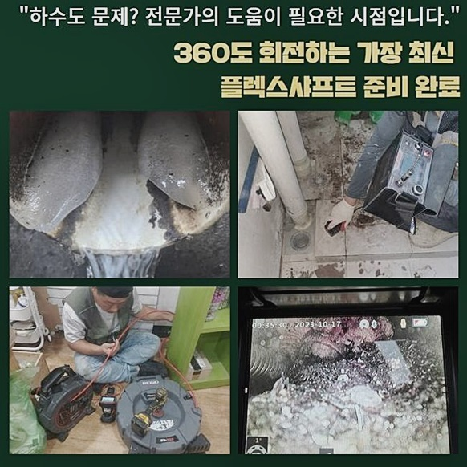

🏠 관악구 청림동하수도막힘 난향동 배관뚫기 배관설비공사
용인시 처인구 배관막힘 전문 시공 후기

📋 작업 개요
- 위치: 용인시 처인구, 수원시 영통구, 화성시 동탄
- 서비스 유형: 배관막힘, 고압세척, 내시경점검
- 작업 일시:
- 업체명: 하수구수사대 (010-5615-2118)
🔍 문제 상황
관악구 청림동하수도막힘 난향동 배관뚫기 배관설비공사
하수구막힘으로 출동했었던 의뢰자분의 음식점현장은 배수상태가 점진적으로 느려졌다고 알려주셨는데 이런상태는 빠르게 조치해야하는 신호인데요
셀프조치를 통해서 시도해보다가 일시적으로만 해결되어 불편감이 느껴지고계시면 전문가를통해 하수구작업을받는게 좋은방법이죠
해결을원한다면 저희업체를 통하여 문의주신다면 신속한 출동해드려서 해결해드릴게요
음식점에서 하수구막힘으로 곤란하다면 문제를 타파켜시켜드리고 쾌적한환경으로 만들수있게끔 노력하고있어요
고객님께서 설명해주신 내용으로 판단을내리고 가장먼저 찌꺼기들을 석션장비로 흡입시킨뒤 배수관을열어 내부상황을 확인해보았죠
하수도내부를 확인하기위해 주름관해체후 살펴봤습니다
안쪽깊히 퇴적되어있는 기름덩어리와 찌꺼기들을 깔끔히제거하고 정화과정또한 거쳤어요
악취의원인 막힘문제를 처리하고 정상적으로 배수상태가 가능하게끔 조치를취했죠
원활하게 배관이용을 하실수있게끔 유지방법부터 관리방법까지 안내드렸어요
신속한조치로 배관을뚫어내 의뢰자의 편리함을 높일수가 있었답니다
다음장소는 상가시설이었는데 필요기계를 준비해서 문제의장소로 방문해주었죠

🔎 원인 분석
💡 전문가 진단: 정밀 진단 장비를 사용하여 슬러지의 고착 여부를 판명하고 타격/세척 작업을 실시했습니다.
물이빠지는것이 점차 느려지고있고 셀프조치로 몇번 조치를 취해봤지만 온전하게 해결되지못했다고 곤란함을 느끼셨어요
배수문제는 전문적인지식이 필요한까닭에 저희업체가 맡게되어 다행이에요
착수한작업으로 인하여 불편했던점이 해소되었기를 바래요
같은문제로 막히는현상이 재발되었을때 마음편안히 전화주신다면 신속하게 대처해드릴게요
물이원활히 배수되지못하고 역류증상도 발발되어 악취가발생된 상태였으며 이러한문제로 인해서 고객님에게 곤란함을 야기시켰죠
주방이용시 물이흐르지못하고 역류까지 발생되는것은 건강상에도 좋지않습니다
그래서 빠른조치가 필요했죠
여러현장의 경력이풍부한 전문가들이 직접내방하여 원인이무엇인지 찾아드렸어요
발생한이유는 기름슬러지때문에 막힘이 일어난것으로 파악할수있었네요
앞서 강조드렸지만 막힘증세는 빠른대처를 통해서 해결해주는것이 좋은데 막히게되어 악취현상으로 발전된다면 일상을 영위하는데있어 불편함을 초래시킬수가 있답니다
저흰 고객분들의 깔끔한환경을 만들어드리고자 조속한대처를 취해드릴것을 약속합니다!
필요한조치로 문제를정확히 처리해드리도록 해볼게요
정상적인 배수시스템을 만들기위해 최선을다하여 작업하고 혹여나 실패할경우 작업비를 요구하지않아요

🔧 작업 과정
하수구와 관련해서 방지법까지 안내하고있어요
고객께서 쾌적환생활을 유지할수있도록 꼼꼼하게 작업진행할게요!
저희들은 하수관의 특징에대해 파악하여 대책을 마련하는 과정들을 강조하여 수행하고있습니다
배관카메라를 활용하여 하수구내부를 살피고 오염정도와 배관구조를 파악한답니다
카메라장비는 오염물질이 어떤형태로 쌓여있는지 확실히보여주며 이를바탕삼아 고객분에게 상태를 설명드립니다
이런과정으로 효율성이있고 정밀한 수리과정을 거치게됩니다
주기로 하수구점검을 진행해주시는게 좋아요
배관깊은곳에 기름슬러지나 석회물질이 쌓일수있기때문에 제거해야만해요
다시한번 일러드리는것으로 하수구내시경을 쓰면 하수구안쪽까지 진단할수있죠
이뿐아니라 슬러지의 상태까지 확인이가능해요
오염물을 제거하려면 전문장비들이 필요합니다
세척과정시 슬러지이물은 분해시키기 어렵다보니 물을통해 불려준뒤 썩션기로 제거하는것이 효율적이에요
이물이퇴적되어 단단한상태로 굳어버렸다면 샤프트장비를 써서 제거할수있어요
지금현장은 야채껍질들과 거대한슬러지가 하수관을 막히게한 상황이었는데요
이로인하여 간단한 스케일링으로는 해결하기어려웠고 플렉스샤프트로 분쇄과정을 거친뒤 고압세척으로 하수도를 정리하기로 결정했어요
이것으로 배수가 막혔던현상이 깔끔히 해결될걸로 기대할수있었죠
분해를시작하니 잔여되어있던 찌꺼기와 오염물이 파쇄되었어요
꽉막혀있는 지점에서는 분쇄강도를 조절해가며 신중한 작업이 요구되었는데 이로인하여 하수구손상을 발현시키지않은채 마칠수있었어요
분해가마무리되니 이물이조각나서 청소하기 용이했고 이후엔 고압청소로 청소하기로했죠
수압력이강한 물줄기로쏘아 배관속의 오염물들을 소거시켰는데 이때에도 배수관손상을 발현시키지않도록 심혈을기울여서 손봐야했어요


✅ 작업 완료
모든과정들을 마무리한후 가져온 장비들을 챙기고서 현장을나섰어요
하수구가 막히는것을 방치시키지말고 문제를 발견하자마자 대처하실것을 추천드립니다
문제를 내버려두신다면 2차피해로 불거질수있어 신속처리가 필요한것이죠
지역관계없이 60분내로 도착할수있으며 확실하게 작업과정에 대해서 공개하고있사오니 우려하지않으셔도 된답니다
믿고맡겨만 주신다면 신뢰해주신만큼 실패없는결과로 나타내겠습니다!
문제와관련하여 궁금한것들이 해소되지못했다면 시간관계없이 전화를통해 물어보신다면 상세한응대로 맞이해드릴게요




⚠️ 하수구 배관 막힘 예방 및 관리 가이드
- ✅ 머리카락, 비닐, 물티슈 등 물에 분해되지 않는 이물질은 절대 흘려보내지 마세요.
- ✅ 기름기 많은 식기는 설거지 전 키친타올로 먼저 기름때를 닦아내세요.
- ✅ 주기적으로 배수구에 뜨거운 물을 가득 부어주어 유지방 고착을 방지하세요.
- ✅ 작업 후 1년 이내 재발 시 무상 A/S 보증 서비스를 제공합니다.
💡 핵심 정리
- 확실한 장비 작업(내시경 점검 및 샤프트 스케일링)으로 원인을 뿌리 뽑습니다.
- 작업 후 1년 이내에 동일한 부위 재발 시 100% 무상 A/S 서비스를 보장합니다.
- 서울 · 경기 · 인천 전 지역에 24시간 언제든 긴급 출동할 수 있도록 항시 대기 중입니다.
❓ 자주 묻는 질문 (FAQ)
🚨 용인시 처인구 배관막힘 문제로 고민이신가요?
정확한 원인 진단과 확실한 시공으로 재발 없는 해결을 약속드립니다.
24시간 긴급 출동 | 서울 · 경기 · 인천 전지역 | 1년 내 재발 시 무상 A/S